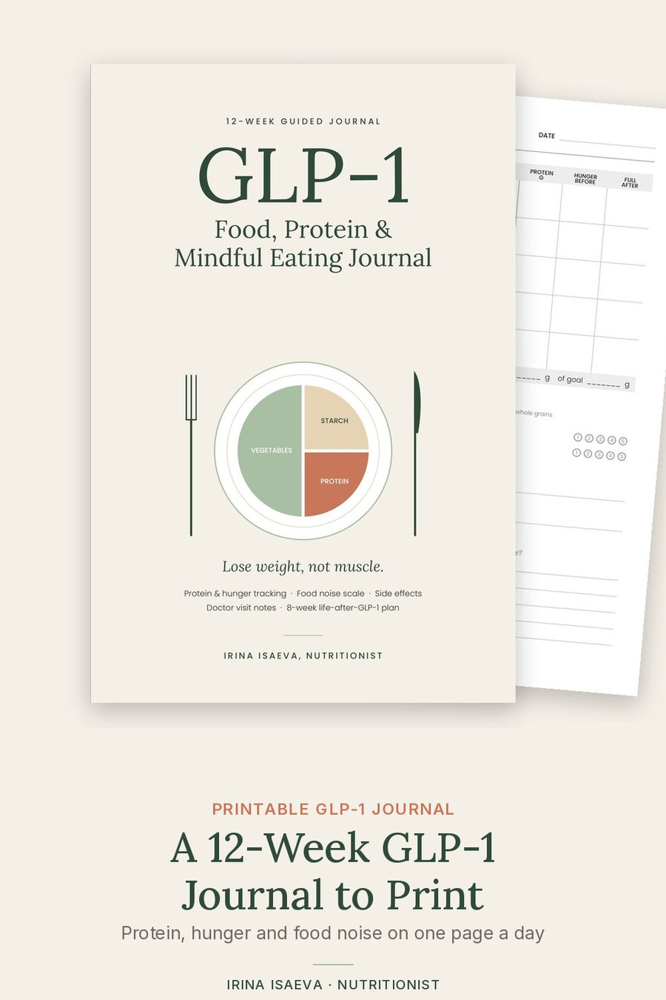
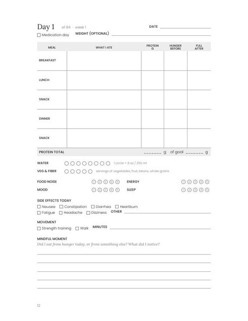
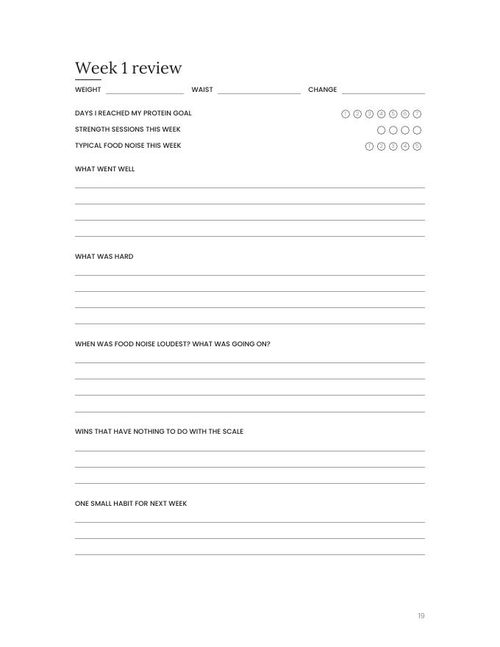
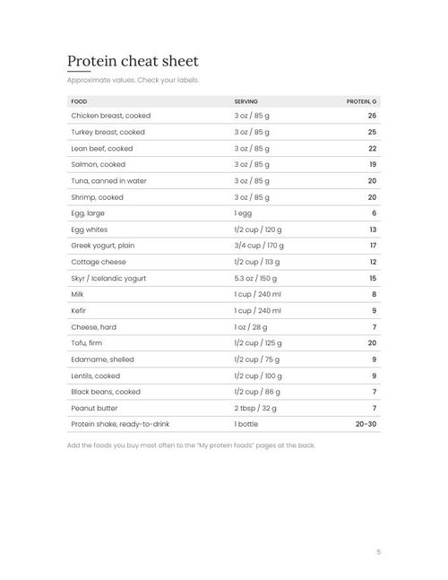

Free printable
Hunger and Fullness Scale, 1 to 10
Rate your hunger before a meal and your fullness after it. Start eating at 3–4 and stop at 6–7.
 Download the printable page (PDF)
Download the printable page (PDF)
The scale
- 1Starving, shaky, irritable
- 2Very hungry, hard to think of anything else
- 3Hungry, ready to eat
- 4Slightly hungry
- 5Neutral, neither hungry nor full
- 6Pleasantly satisfied
- 7Full, comfortable
- 8Too full, a bit uncomfortable
- 9Very full, stuffed
- 10Painfully full, nauseous
The shaded numbers are a comfortable place to start (3–4) and stop (6–7). On GLP-1 you may reach 7 after a few bites. That is the medication working. Listen to it.
Food noise, 1 to 5
- 1Quiet. I think about food at mealtimes.
- 2Occasional thoughts, easy to let go.
- 3Noticeable. A few cravings I had to deal with.
- 4Loud. Food was on my mind a lot.
- 5Constant. Hard to focus on anything else.
This is one page of a 132-page journal
GLP-1 Food, Protein & Mindful Eating Journal

I made this journal for people who take a GLP-1 medication and want more than a dose log. On each daily page you write down how much protein you got, how hungry and how full you were, and how loud the food noise was. After a few weeks you will see which meals keep you full.
- 84 undated daily pages: meals, protein, hunger and fullness, water, food noise, side effects
- 12 weekly reviews and 3 monthly check-ins
- A protein cheat sheet and meal ideas for low-appetite days
- A medication log and doctor visit notes
- An 8-week maintenance plan for life after GLP-1
- US Letter and A4



$6.99 printable PDF
Get the 12-week journalCheckout is on Lava.top. You download the files right after payment.
About the author
I'm Irina Isaeva, a nutritionist. I hold a professional diploma in nutrition and psychological counseling from Union University in Moscow: a 1,500-hour program completed in 2026, with the qualification of nutritionist. My coursework covered dietetics, the causes of excess weight and the psychology of eating behavior.
This is general information for adults and doesn't replace advice from your doctor. Do not adjust doses on your own.